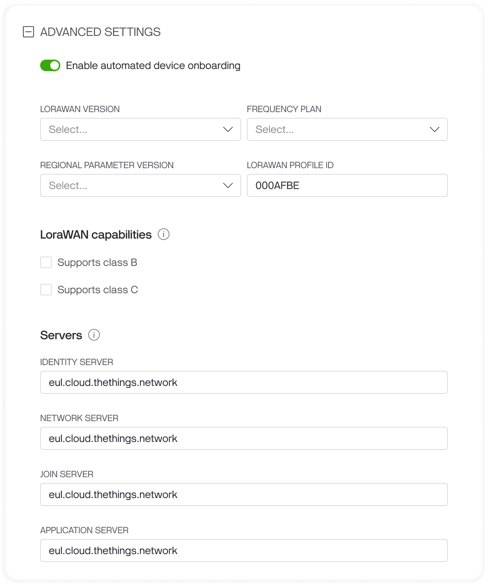
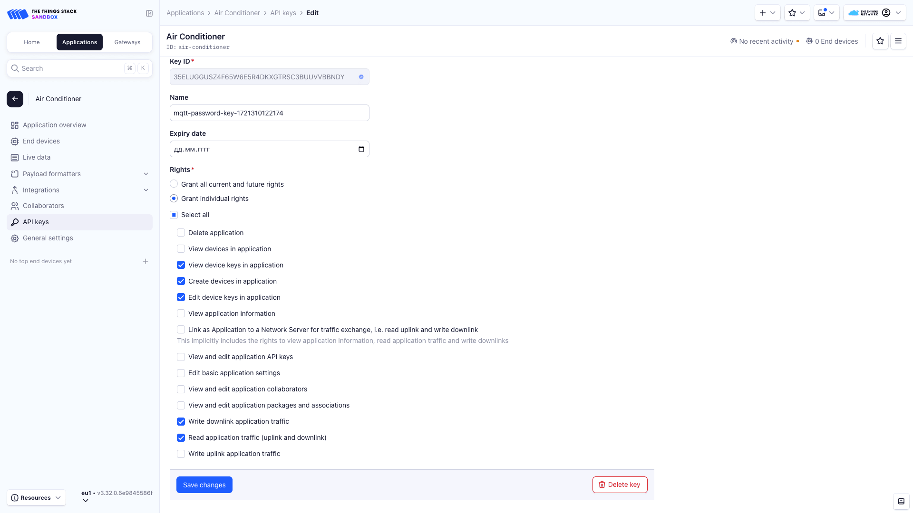
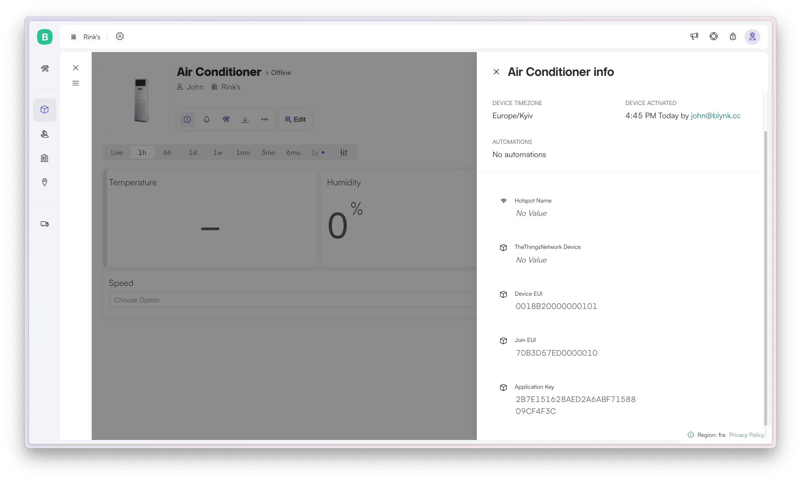
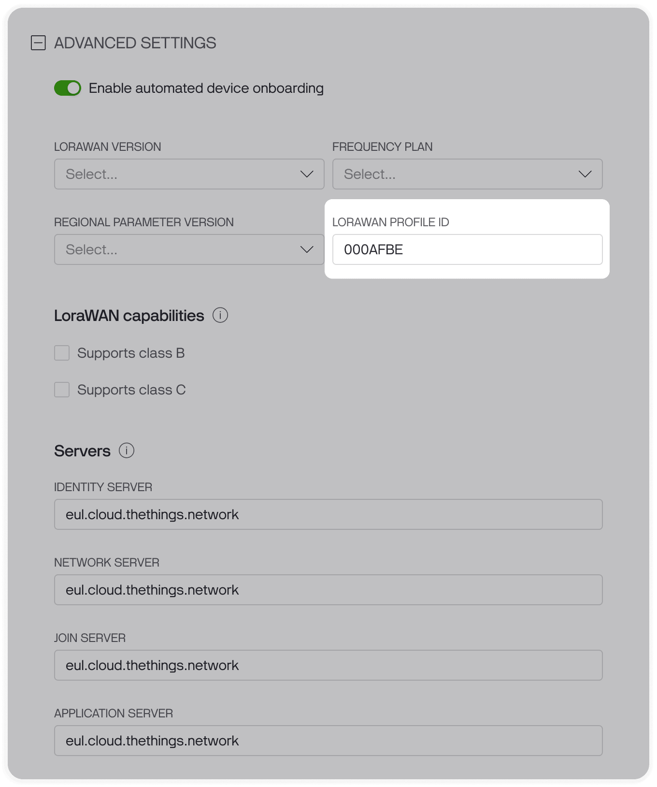

Automated Device Onboarding
Once the integration with Blynk is configured, all devices in your The Things Stack application will be automatically imported into Blynk as soon as they transmit any data.
Additionally, you can manually create devices in Blynk or use the Automated Device Onboarding feature, which offers an optimal user experience for connecting devices. However, this requires you to configure first the Automated Device Onboarding settings in your Blynk integration.
Enabling Automated Device Onboarding
To enable the Automated Device Onboarding feature:
- Open the Blynk Console and navigate to Developer Tools -> Integrations -> The Things Stack.
- Select the application you wish to configure and access the advanced settings.
- Turn on the Enable Automated Device Onboarding switch.
- Specify the LoRaWAN version, Frequency plan, and Regional Parameter Version. If needed, check the Support class B and/or Support class C boxes.
- Enter the addresses of The Things Stack components, which you can find at the bottom of the Overview page on your The Things Stack dashboard. Save the changes.

Additionally, Blynk requires the following permissions:
- View device keys in application
- Create devices in application
- Edit device keys in application
To grant these permissions, either generate a new API key or edit the existing one that you have been using with Blynk.

Now that the automated device onboarding is enabled and configured, you can onboard your first device.
Note:
Sometimes, a device requires a reboot to initiate the onboarding flow. Make sure to restart the device if it doesn’t automatically start the onboarding process after following the setup steps. This can help ensure the device properly connects and begins the necessary communication with Blynk and The Things Stack.Manually configure the tokens
This is the easiest, but least scalable way to onboard the device:
Begin by creating the device from the template on the Blynk Console: Go to Devices -> + New Device -> From template, select the template, and assign a meaningful name to the device. Then click Create.
Next, to provision the device on The Things Stack, open Info & Metadata and fill out the three metadata fields: Device EUI, App EUI and Application Key.

Once these three metadata fields are specified, Blynk will automatically create the device in The Things Stack application.
Onboard using Static Tokens
The preferred method for device provisioning is using Blynk Static Tokens. Here’s how to do it:
- Create a CSV file listing the Device EUI, App EUI, and Application Key for each device.
- Use this CSV file to create static tokens: open the Blynk Console -> Developer Zone -> Static Tokens -> Generate Static Tokens -> Create From File. Then select the device template and upload the file.
- This process will generate a unique QR code for each device.
- These QR codes can be scanned via the Blynk Mobile application or on the Blynk Console by the end customer.
- Once a QR code is scanned and the device is created, it will be automatically created in The Things Stack application.
Here is an example of a CSV file that could be used for creating static tokens:
Device EUI,App EUI,Application Key
0018B20000000101,70B3D57ED0000010,2B7E151628AED2A6ABF7158809CF4F3C
0018B20000000102,70B3D57ED0000011,3B7E151628AED2A6ABF7158809CF4F3D
0018B20000000103,70B3D57ED0000012,4B7E151628AED2A6ABF7158809CF4F3E
Onboard using LoRaWAN QR Code
Blynk also supports LoRaWAN® Device Identification QR Codes for Automated Onboarding. To use them, follow these steps:
- First, create the static tokens as described in the Onboard using Static Tokens section.
- Construct the QR code in the LoRaWAN format using the Profile ID specified in the advanced settings of The Things Stack integration application card on Blynk.
Additionally, you can change the Profile ID used in the QR code body. To do so, open the application settings on Blynk, locate to the advanced settings and edit the Profile ID field.

For LoRaWAN QR codes, Blynk requires the following:
- The code must start with
LW:D0. - It must contain the App EUI, Device EUI, and the Profile ID.
- Optionally, it may contain a checksum.
- Any other parts of the QR code are ignored.
Here is an example of how the QR code data should be structured:
LW:D0:<App EUI>:<Device EUI>:<Profile ID>:<Optional CheckSum>
Here is an example of the QR code body with App EUI = 70B3D57ED0000010, Device EUI = 0018B20000000101 and Profile ID = 000AF8BE:
LW:D0:70B3D57ED0000010:0018B20000000101:000AF8BE
Generate the QR code by inputting this content into any QR code generator tool, such as QR Code Generator. Then this QR code can be scanned by the end customer in the Blynk Mobile application or on the Blynk Console. Once the device is created, it will be automatically added in The Things Stack application.
Re-provisioning
If you’ve changed your hardware or updated any LoRaWAN connection parameters (such as DevEUI, AppEUI/JoinEUI, or Application Key), you will need to create a new device in The Things Stack.
To retain the historical data, settings, or any other details for the old device in Blynk, follow these steps:
- Navigate to the Device Information & Metadata tab for the old device in Blynk.
- Update the TheThingsStack Device ID metafield.
- Optionally, you can also update other related metafields like DevEUI, JoinEUI, and Application Key.
Warning:
If the new device goes online in The Things Stack before updating the metafields in Blynk, it may be automatically imported into Blynk. In case of a TheThingsStack Device ID collision (where two devices have the same ID), Blynk will randomly select one device. To resolve this, simply delete the automatically imported device to ensure the correct one is used.